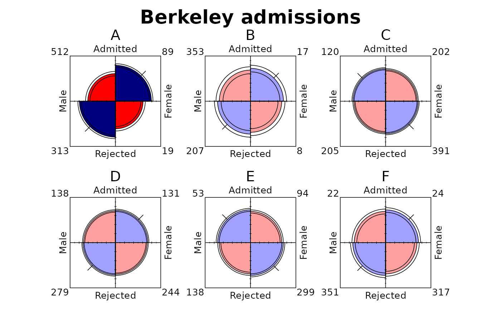
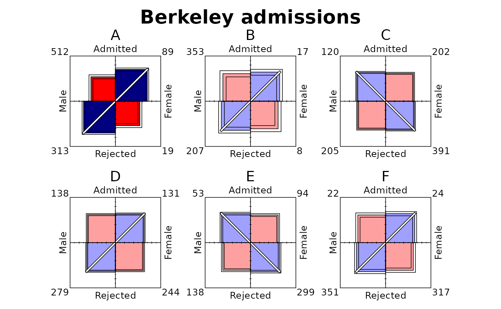
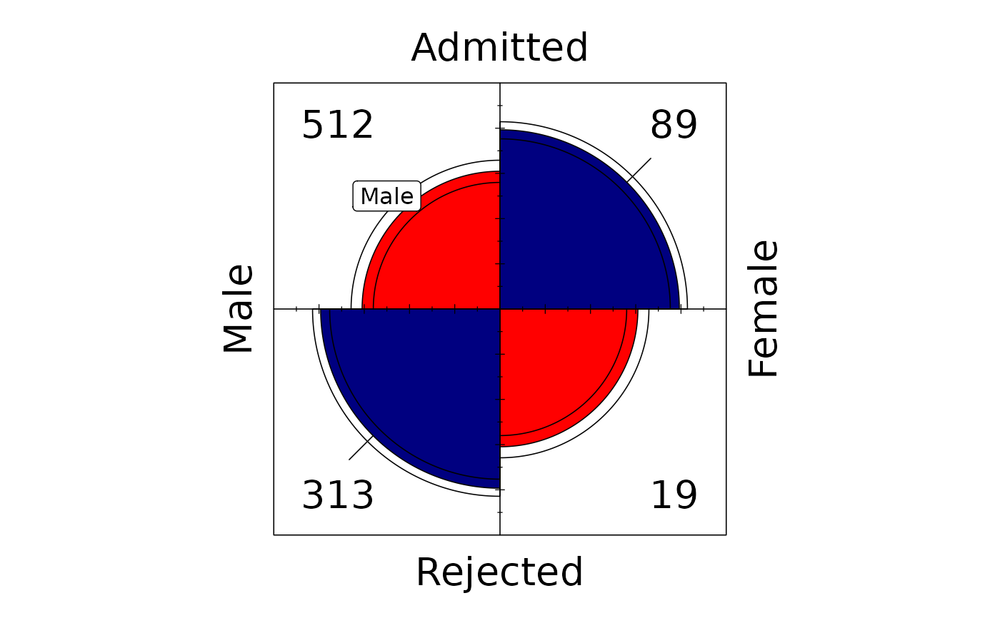

geom_fourfold() draws a fourfold display in each ggplot2 panel. Sector
radii represent cell frequencies after the selected standardization, while
sector colours, confidence rings, and direction ticks show the direction
and strength of association.
Usage
StatFourfold
GeomFourfold
geom_fourfold(
mapping = NULL,
data = NULL,
...,
std = c("margins", "ind.max", "all.max"),
margin = c(1, 2),
conf_level = 0.95,
extended = TRUE,
ticks = 0.15,
p_adjust_method = stats::p.adjust.methods,
shape = c("circle", "square"),
counts = c("auto", "inside", "outside", "none"),
palette = fourfold_palette(),
na.rm = FALSE,
show.legend = FALSE,
inherit.aes = TRUE
)Arguments
- mapping
Set of aesthetic mappings created by
ggplot2::aes(). If supplied andinherit.aes = TRUE, these are combined with the plot's default mappings.- data
The data to display in this layer. If
NULL, the default, the data are inherited from the plot.- ...
Other arguments passed to
ggplot2::layer(), typically fixed aesthetics such ascolourorlinewidth.- std
Standardization method.
"margins"fixes the selected margins,"ind.max"divides each panel by its largest cell, and"all.max"divides every panel by the largest cell in the complete layer.- margin
Integer vector selecting the table margins when
std = "margins". Usec(1, 2)for both margins,1for theymargin, or2for thexmargin.- conf_level
Confidence level in
[0, 1). Set to0to suppress confidence rings.- extended
If
TRUE, use adjusted p-values to emphasize association and draw direction ticks.- ticks
Non-negative length of the association direction ticks in the geom's normalized panel coordinates.
- p_adjust_method
Method passed to
stats::p.adjust()for adjustment across panels. Defaults to"holm", the first value in stats::p.adjust.methods.- shape
Shape of the cell sectors:
"circle"(the default, as invcd::fourfold()) draws quarter-circles;"square"draws quarter-squares of equal area.- counts
Placement of cell counts:
"auto"(the default) moves counts outside when the drawing approaches them;"inside"always uses the inside corners, even if overlapped;"outside"always uses the outside corners;"none"hides the counts.- palette
Character vector of at least six valid colours in the semantic order used by
fourfold_palette().- na.rm
If
FALSE, the default, rows with a missingxoryare removed, and panels with a missingweightare left empty, with a warning. IfTRUE, this is done silently. See the Missing values section.- show.legend
Logical indicating whether this layer should be included in legends. The default is
FALSEbecause the semantic fills are not a mapped aesthetic.- inherit.aes
If
FALSE, override rather than combine with the plot's default aesthetic mappings.
Value
A list of a ggplot2 layer and a default coordinate system,
coord_cartesian(reverse = "y", ratio = 1), which can be added to a
ggplot2::ggplot() object (see the Coordinate systems section).
Details
Map the two-level horizontal variable to x, the two-level vertical
variable to y, and cell frequencies to weight. When weight is omitted,
each row counts as one observation. The first x level is drawn on the left
and the second on the right; the first y level is drawn at the top and the
second at the bottom (see the Coordinate systems section). Set factor levels
explicitly when their order matters.
Alternatively, reorder categories with the limits argument of
ggplot2::scale_x_discrete() or ggplot2::scale_y_discrete(), and rename
them with labels. Scale breaks that reorder or omit categories, and a
scale palette that moves them, are errors.
One panel must contain exactly one 2-by-2 table. Use
ggplot2::facet_grid() or ggplot2::facet_wrap() to display stratified
tables. Duplicate x/y combinations within a panel are summed and cells
with no rows are completed with zero counts. For missing values, see the
Missing values section.
Odds ratios, Wald confidence intervals, and extended-display p-values match
the calculations in vcd::fourfold(). If any observed cell is zero, 0.5 is
added to all four cells for inference; see the Zero counts section for how
such tables are drawn. P-values are adjusted across all panels in the
layer that have one. A panel whose counts are all zero has none, whereas
vcd::fourfold() counts it with a p-value of 1, so in a layer with such a
panel the adjusted p-values differ from those it gives. Confidence
intervals themselves are not adjusted.
With shape = "square", each cell is drawn as a quarter-square with the
same area as the corresponding quarter-circle (side
\(r\sqrt{\pi}/2\) for radius \(r\)), so the two
shapes display a table with identical areas. Confidence rings
become nested square outlines.
With counts = "auto", cell counts stay inside the frame corners unless
a sector, either confidence outline, or a direction tick comes close to the
count text. Both shapes use the largest drawing extent across the layer; circles
also account for the width of the layer's count labels. Counts then move
just outside the frame corners. Clearance is measured at draw time, so
placement can differ between panels of different physical sizes.
Use counts = "inside" or "outside" to force the placement, or "none"
to hide counts without affecting any statistics. Outside counts can collide
with category labels or neighbouring panels at small sizes; use larger
panels, more panel spacing, smaller text, or counts = "inside".
The six semantic fill colours are supplied by palette; they are not mapped
through a ggplot2 fill scale. Typography and layout defaults are controlled
by theme_fourfold().
Aesthetics
geom_fourfold() understands the following aesthetics:
x(required): a categorical variable (factor, character, or logical) with exactly two levels. Convert numeric codes, such as 0/1, withfactor().y(required): a categorical variable with exactly two levels.weight: non-negative cell frequencies; defaults to1.
Each panel draws one table, so its drawing properties are set for the whole
layer rather than mapped: give colour, linewidth, and alpha as fixed
arguments, for example geom_fourfold(colour = "grey30"). Text size and
family are inherited from the plot theme, such as theme_fourfold(), and
can also be given as fixed arguments. Fill colours are set with palette.
Mapping any of these five in geom_fourfold() is an error, including a
mapping to a computed variable with ggplot2::after_stat(),
ggplot2::after_scale(), or ggplot2::stage(). Any such mapping inherited
from ggplot2::ggplot() is ignored, since it may be meant for other layers.
The exception is an inherited after_stat() mapping to a variable that
geom_fourfold() does not compute, such as after_stat(n) for
ggplot2::geom_count(): ggplot2 evaluates it before the layer can ignore
it, so it stops the plot. Use inherit.aes = FALSE in geom_fourfold(), or
move the mapping to the layer that uses it.
Coordinate systems
The display is drawn in the plot's coordinate system, so axes, gridlines,
and other layers agree with it. The first x level is at position 1 and the
second at position 2, and likewise for y; the display fills the square
from 0.5 to 2.5 on both axes, and each cell's quadrant is centred on its
category position.
geom_fourfold() therefore also adds
coord_cartesian(reverse = "y", ratio = 1) to the plot, as
ggplot2::geom_sf() adds ggplot2::coord_sf(). Reversing the y axis
keeps the first y level at the top, as in vcd::fourfold(), for every
layer; reversing the y scale with limits would instead reorder the
table. The unit ratio keeps circles round under any theme. Both axes span
the same range by default, so it also makes the panels square. A theme's
aspect.ratio overrides ratio: it fixes the panel's shape, and circles
become ellipses when the ranges of the axes differ (see the Missing values
section).
A coordinate system that you add to the plot replaces this one, as usual in
ggplot2. Add yours after the last geom_fourfold() in the plot: a later
geom_fourfold() replaces your coordinate system with its own, with
ggplot2's message. Without reverse = "y", the first y level is drawn at
the bottom, as for any ggplot2 layer. To keep it at the top and the circles
round, add coord_cartesian(reverse = "y", ratio = 1, ...): without
ratio, the display stretches to fill the panel, so circles become
ellipses wherever the panel is not square.
Common additions such as ggplot2::coord_fixed() and
ggplot2::coord_equal() also replace the default, and draw the first y
level at the bottom unless reversed. Any reverse setting is drawn
correctly. GeomFourfold and StatFourfold are the ggproto objects behind
geom_fourfold(). Used directly with ggplot2::layer(), they take the
defaults of geom_fourfold(), and GeomFourfold adds no coordinate system
and follows the one the plot has.
The coordinate system must be Cartesian, such as ggplot2::coord_cartesian()
or ggplot2::coord_fixed(). ggplot2::coord_flip() is an error: swap the
x and y aesthetics instead, which transposes each table and keeps its
odds ratio. So are ggplot2::coord_sf(), ggplot2::coord_transform(), and
polar coordinates, which would distort the areas that carry the display's
meaning. Because of the fixed ratio, ggplot2 does not allow free facet
scales (scales = "free") with the default coordinate system. To use them,
add your own coordinate system without ratio after geom_fourfold(),
such as coord_cartesian(reverse = "y"). Then facet_grid(space = "free")
also works, including with theme_fourfold(), which sets no aspect ratio;
it shares widths among columns (heights among rows) in proportion to the
ranges of their axes. Free scales and free space are therefore possible
only with your own coordinate system without ratio, and the displays are
then round only where a panel happens to be square.
The display is not clipped to the panel, so that counts outside the frame
stay whole. Zooming with the xlim and ylim of the coordinate system
therefore does not crop it, and the display can then extend over
neighbouring panels and strips.
Annotations
A point or label that another layer, such as ggplot2::geom_point(),
ggplot2::geom_text(), or ggplot2::annotate(), places at an x level and
a y level is drawn at the centre of that cell's quadrant. This is a fixed
position, the same in every panel, not the centre of the sector, whose size
varies with the data. See the examples.
Zero counts
If any cell of a panel's table is zero, 0.5 is added to all four cells
before the odds ratio, its standard error, and the confidence interval are
computed, as in vcd::fourfold(). The count labels always show the
observed counts.
A panel whose four counts are all zero, such as an empty stratum in a
faceted display, is drawn blank: only its frame, axes, labels, and zero
counts are shown, with no sectors, rings, or direction tick. It has no odds
ratio, confidence interval, or p-value (they are NA) and is left out of
the p-value adjustment, so it does not change the other panels.
(With the default margin = c(1, 2), vcd::fourfold() instead draws such
a stratum from the corrected table, as four equal quarter-circles.) A facet
level with no rows at all, for example with drop = FALSE, is left empty
by ggplot2 as usual, without a frame or counts.
Each confidence ring shows the table that has the observed row and column
totals and an odds ratio equal to one confidence limit, standardized like
the data. With the default margin = c(1, 2), which depends only on the
odds ratio, this is the fully standardized table at that limit. With the
other std and margin settings, if a whole row or column is zero, the
observed totals admit no other table, so the rings of that panel are built
from the row and column totals of the table with 0.5 added to every cell,
rescaled to the observed total (which matters only for std = "all.max").
Panels with isolated zero cells, but no empty row or column, keep the
observed totals for their rings.
A table with an empty row or column contains no information about the odds ratio: with an empty row, for example, nothing is known about how that row would split between the columns. Its odds ratio and p-value exist only because of the correction. With an empty row, the odds ratio is the ratio of the two counts in the other row, each plus 0.5, so it reflects how that row splits rather than an association. The rings are correspondingly wide, but the p-value can still fall below the significance level, so the colour, significance shading, and direction tick of such a panel say nothing about an association.
The sectors show the observed table wherever the standardization can use it:
With
std = "margins"and the defaultmargin = c(1, 2), the sectors depend only on the odds ratio, which already includes the correction.With
margin = 1, a row that is entirely zero has no proportions, so it is drawn from the corrected table, as two equal quarter-circles. The other row keeps its observed proportions. The same applies to an empty column withmargin = 2. An empty column withmargin = 1, or an empty row withmargin = 2, keeps its observed proportions and so has no sectors, except in a cell it shares with an empty row (or column) that is drawn from the corrected table.With
std = "ind.max"or"all.max", the sectors show the observed counts, so an empty row or column has no sectors. Its rings still come from the corrected totals, so they need not match the sectors.
Weights that are very small but not zero, such as the remainder of
floating-point arithmetic (0.1 + 0.2 - 0.3), count as observations, so a
row or column of them is not empty and its rings keep the observed totals.
Where the standardization keeps such a row or column near zero
(std = "ind.max" or "all.max", margin = 2 for a row, or margin = 1
for a column), its near-zero totals leave almost no room for other odds
ratios, so the rings lie on the sectors, as if the estimate were precise.
An exactly empty row or column gets the wide rings described above
instead. Round such weights, for example with round(w, 8), if they are
meant to be zero.
Missing values
A row with a missing x or y cannot be placed in the table and is
removed; a panel with no rows left is left empty. Values that the limits
of a discrete scale exclude become missing and are removed the same way,
with the same warning. A row with a missing weight but known x and y
is different: its cell's count, and so the panel's table, is unknown.
Counting it as zero would change the odds ratio, so its whole panel is left
empty instead. (vcd::fourfold() likewise draws no table with a missing
count; it stops with an error.) A cell with no rows at all is still a zero
count.
An empty panel has no frame, counts, or labels, so it cannot be mistaken
for a panel whose counts are all zero, and it looks the same as a facet
level with no rows. It has no rows in the layer data and takes no part in
std = "all.max" or the p-value adjustment, so the other panels are drawn
exactly as if its stratum were not in the data. (With
facet_grid(margins = TRUE), the margin panels that pool that stratum are
unknown too, and are also left empty.) With na.rm = FALSE, the default, a
warning names each panel that lost rows or was left empty; with
na.rm = TRUE, these warnings are not given. With free scales, which need
a coordinate system you add without ratio (see the Coordinate systems
section), ggplot2 itself may still warn about the axes of an empty panel
("Position guide is perpendicular to the intended axis"), as it does for
its own layers.
A missing x or y keeps a place for missing values on its axis, as for
every geom, because ggplot2 trains position scales before the stat runs.
The display removes those rows, but the axis stays wider, so the panels that
share that scale are wider (or taller) than the display, with space beside
it. With the default coordinate system the display stays round, and the
counts and statistics are not affected.
scale_x_discrete(na.translate = FALSE) (scale_y_discrete() for y)
removes that place.
References
Friendly, M. (1994). A fourfold display for 2 by 2 by k tables (Technical Report No. 217). York University, Psychology Department. http://datavis.ca/papers/4fold/4fold.pdf
Friendly, M., & Meyer, D. (2016). Discrete Data Analysis with R: Visualization and Modeling Techniques for Categorical and Count Data (Section 4.4). Chapman & Hall/CRC. http://ddar.datavis.ca
Examples
ucb <- as.data.frame(UCBAdmissions)
ggplot2::ggplot(
ucb,
ggplot2::aes(x = Gender, y = Admit, weight = Freq)
) +
geom_fourfold() +
ggplot2::facet_wrap(ggplot2::vars(Dept), ncol = 3) +
ggplot2::labs(title = "Berkeley admissions") +
theme_fourfold()

# Quarter-squares of equal area instead of quarter-circles
ggplot2::ggplot(
ucb,
ggplot2::aes(x = Gender, y = Admit, weight = Freq)
) +
geom_fourfold(shape = "square") +
ggplot2::facet_wrap(ggplot2::vars(Dept), ncol = 3) +
theme_fourfold()

# Other layers are placed by category: a label in the Male-Admitted cell
ggplot2::ggplot(
subset(ucb, Dept == "A"),
ggplot2::aes(x = Gender, y = Admit, weight = Freq)
) +
geom_fourfold() +
ggplot2::annotate("label", x = "Male", y = "Admitted", label = "Male") +
theme_fourfold()
